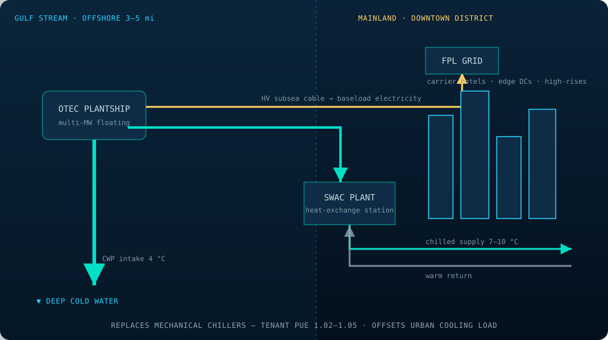

TROIB · Engineering Brief
Sea Water Air Conditioning for Coastal Data & Urban Loads
Florida OTEC plantships moored in the Gulf Stream export power to the grid and pipe post-turbine cold water ashore to a SWAC district loop — cooling downtown Miami carrier hotels, edge data centers, and high-rises at a fraction of mechanical-chiller energy.
Abstract
Sea Water Air Conditioning (SWAC) uses naturally cold deep seawater as the chilled-water source for a district cooling network, displacing the electrically intensive vapour-compression chillers that dominate building energy in hot, humid coastal cities. In the TROIB Southeast Florida zone, utility OTEC plantships are moored 3–5 mi offshore in the Gulf Stream; they export firm power to the FPL grid through a high-voltage subsea cable, and their post-turbine cold water (already drawn from depth and warmed only to ≈7–10 °C) is piped to a mainland SWAC district loop serving downtown Miami carrier hotels, edge data centers, and high-rise HVAC. Because SWAC replaces compressor work with pumping work, cooling energy intensity falls from ≈0.6–0.9 kW/ton for conventional chillers to ≈0.1–0.2 kW/ton. This brief presents the loop heat-exchange basis, the tons-of-refrigeration accounting, and the district load-growth trajectory to a Year-10 offset of ≈250 MW of urban cooling alongside 600 MW of direct-to-grid power.
Plantship and Grid Architecture
The Florida zone uses purpose-moored OTEC plantships rather than re-used rigs. Stationed 3–5 mi offshore over the Florida Straits, each plantship sits in the Gulf Stream where warm surface water is reliably ≈25 °C and a cold-water pipe reaches ≈4 °C deep water. Two products leave the plantship: electricity, exported through a high-voltage subsea cable to a Florida Power & Light (FPL) shore station, and cold water, whose remaining thermal capacity is harvested ashore for district cooling rather than discharged.
This dual-use is the efficiency multiplier of the Florida zone. The cold seawater has already been pumped from depth — the dominant OTEC parasitic — so using its residual chill for air conditioning is nearly free incremental value. After passing the OTEC condenser the water has warmed only to roughly 7–10 °C, still far colder than any chilled-water loop a mechanical plant would produce.
The SWAC District Loop
Cold seawater is never circulated through customer buildings directly — corrosion and biofouling forbid it. Instead, a shoreside titanium plate heat exchanger transfers cold from the seawater stream to a closed freshwater district loop. That district loop distributes chilled water through insulated mains to building cooling stations, where a second heat exchanger serves the in-building HVAC. The seawater, now warmed, is returned to a benign mixing depth offshore.

Energy: Compressors vs Pumps
A conventional building chiller runs a vapour-compression cycle: a compressor lifts heat from chilled water up to a hot outdoor condenser. That compressor is the energy cost, conventionally expressed in kilowatts of electricity per ton of refrigeration (1 ton = 3.517 kW of cooling). Efficient water-cooled chillers run ≈0.6 kW/ton; older or air-cooled units reach 0.9 kW/ton or worse.
SWAC has no compressor. The cold already exists in the deep sea; the only electrical cost is pumping seawater and circulating the district loop — on the order of 0.1–0.2 kW/ton. The energy reduction is therefore roughly 4–8×, as summarized in Table 1.
| System | Mechanism | Energy intensity | Relative |
|---|---|---|---|
| Air-cooled chiller | Vapour compression | ~0.9 kW/ton | 1.0× |
| Water-cooled chiller | Vapour compression | ~0.6 kW/ton | 0.67× |
| TROIB SWAC loop | Pumping only | ~0.1–0.2 kW/ton | 0.11–0.22× |
Loop Heat-Exchange Sizing
The cooling capacity a SWAC loop can deliver is fixed by the seawater flow it can move and the temperature rise allowed across the shoreside exchanger:
where Q is cooling power (kW), ṁ the seawater mass-flow rate (kg/s), cp ≈ 3.99 kJ/kg·K, and ΔT the seawater temperature rise across the heat exchanger. Converting the result to tons of refrigeration uses Q[tons] = Q[kW] / 3.517.
Worked example — district main
Suppose the shoreside exchanger draws seawater at ṁ = 3,000 kg/s and the seawater is allowed to warm by ΔT = 10 K (from ≈8 °C to 18 °C):
A single district main on the order of 3 m3/s of cold seawater therefore delivers roughly 120 MW of cooling — enough to serve a substantial cluster of downtown towers and data halls. The avoided compressor energy at ≈0.6 kW/ton would be near 20 MWe, which instead remains available as grid export.
District Load Growth
The Florida district cooling offset and direct-to-grid power scale together as plantship capacity and the shoreside distribution network expand. Table 2 gives the illustrative trajectory.
| Milestone | Urban cooling offset | Direct-to-grid power | Primary loads served |
|---|---|---|---|
| Year 3 | ~40 MW | ~120 MW | Anchor carrier hotels, pilot district |
| Year 6 | ~130 MW | ~350 MW | Downtown core, edge data centers |
| Year 10 | ~250 MW | ~600 MW | Full district + high-rise HVAC |
By replacing roughly 250 MW of compressor-based cooling with pumping-only SWAC, the zone removes both the electrical demand and the urban waste-heat rejection of those chillers from a dense, heat-stressed coastal core — while the 600 MW of firm OTEC power feeds the FPL grid as zero-emission baseload.
Nomenclature
| SWAC | Sea Water Air Conditioning |
|---|---|
| Q | Cooling (heat-exchange) power (kW) |
| ṁ | Seawater mass-flow rate (kg/s) |
| cp | Specific heat of seawater (≈3.99 kJ/kg·K) |
| ΔT | Seawater temperature rise across exchanger (K) |
| ton | Ton of refrigeration = 3.517 kW of cooling |
| kW/ton | Electrical energy intensity of cooling |
| HV | High-voltage (subsea export cable) |
| FPL | Florida Power & Light (grid offtaker) |
Selected References (illustrative)
- International District Energy Association. District Cooling Best Practice Guide. Illustrative bibliographic entry.
- Makai Ocean Engineering. Sea Water Air Conditioning: System Design and Pipeline Engineering. Conceptual reference, illustrative.
- ASHRAE. Handbook — HVAC Systems and Equipment: District Cooling. Illustrative bibliographic entry.
- U.S. Department of Energy. Deep-Water Source Cooling for Coastal Urban Districts. Conceptual reference, illustrative.
- TROIB Project. Engineering Brief TROIB-EB-01: Closed-Cycle Ammonia OTEC. Companion document.